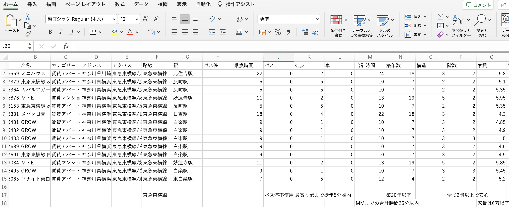
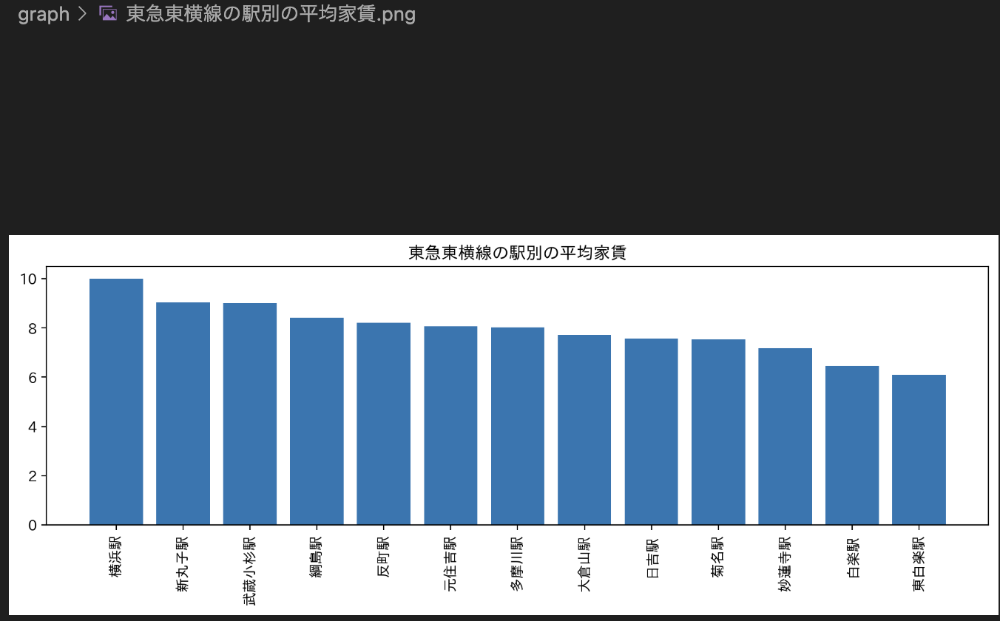
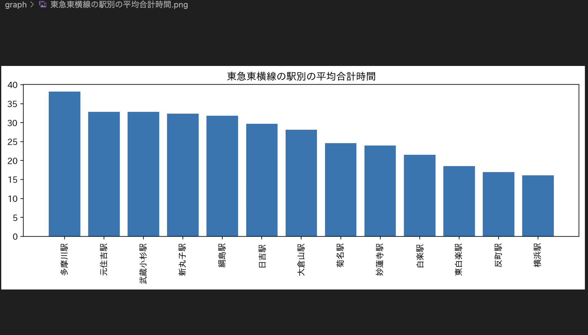
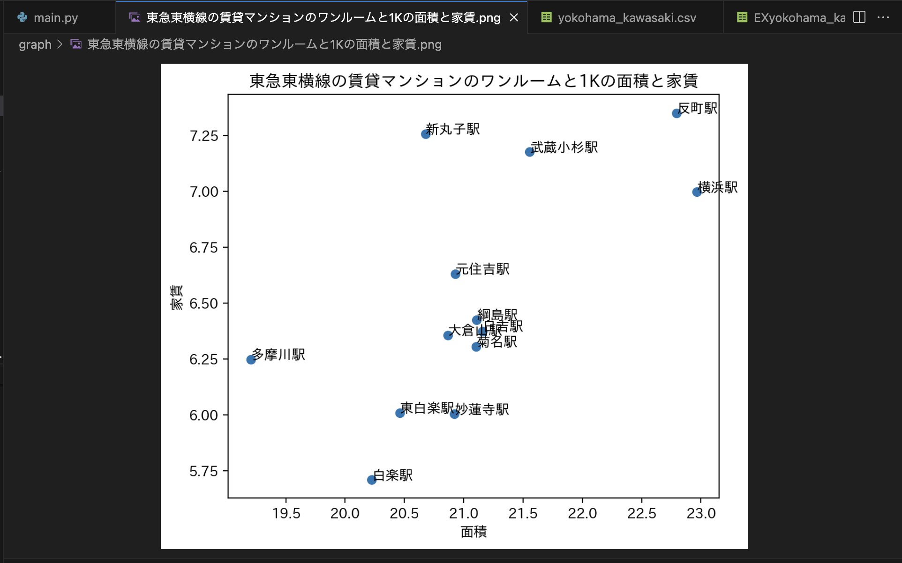
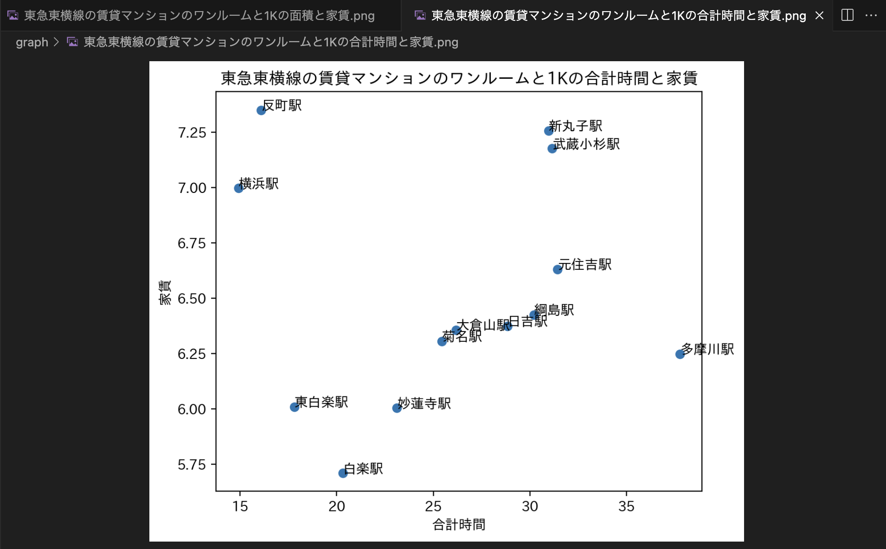

ターゲットを絞る
今回は、5人の意見を参考にターゲットを想像してみる。
元の資料の左上から時計順に、優先順位も参考にしつつ
1人目
-
家賃激安
-
時間早い（MMまでの通学時間短い）
2人目
-
東横線沿い
-
最寄り駅まで5分以内
-
6畳以上
-
家賃6万以内
-
MMまで1時間以内
3人目
-
家賃6万以内
-
2階以上
-
東横線沿い
-
MMまで1時間以内
-
横キャンにも近い
4人目
-
2階以上
-
wifi付き
-
MM,YCまで1時間以内
5人目
-
MMまで1h未満
-
東横線沿い
-
家賃7万以下
-
2階以上
-
オートロック（マンション）
-
バス通学NG
-
ユニットバスNG
5人の意見を参考にして、重視する条件は
-
東横線沿い
-
最寄り駅まで5分以内
-
6畳=面積10.9(m^2)以上
-
家賃6万以内
-
MMまでの合計時間25分以内
-
礼金0
-
バス停不使用（バスは高くて面倒だそう）
-
全て2階以上で安心
-
築20年以下、虫と泥棒対策
とした。
そして以上の条件を満たしそうな物件を絞ったものがこちら

Excel版Yokohama_Kawasaki_2022.xlsx(元.cvs)
Excelと化したyokohama_kawasaki.xlsx（フィルタされてない）
Excelと化したyokohama_kawasaki_2022.xlsx（フィルタされてない）
10MB以上もあるファイルだったがリポジトリが破壊されなくてよかった
excel版作成の手順
- excelで当のcsvファイルを開く
- 拡張子をxlxsに変換
- 全ての列を選択してフィルタをいじる
- 完了
なぜExcelにしたのか
今回、合計時間（＜６０）、家賃（＜６）
などを細かく設定したかったが、
「suumo.py」に書き込んで定義をするのは難しいと
感じたため、代わりにexcelを使った。
pythonが使いやすくなるような、拡張機能もいくつか発見し努めたが、
やはり「suumo.py」を扱うのは変わらず難解だったためである。
また、chatGPT等に質問するにも「suumo.py」が大きいからか、何故かできなかったのである。
もしこのExcelの作業をpythonでもできればすごくいいと思った。
発見した拡張機能
それぞれの拡張機能のご利用は自己責任でお願いします。
おまけ




この4枚のグラフから
- 家賃が低い
- 合計時間が短い
- 面積が広い
- 横浜キャンパスまでが短い
(≒白楽駅、東白楽駅まで近い)
を満たす"可能性が高い"のは
「白楽駅」「東白楽駅」「妙蓮寺駅」「菊名」なので、
これらが最寄りの駅になってる物件をおすすめする。
おまけ2
/rainbow csv_Yokohama_kawasaki_cvs.png)